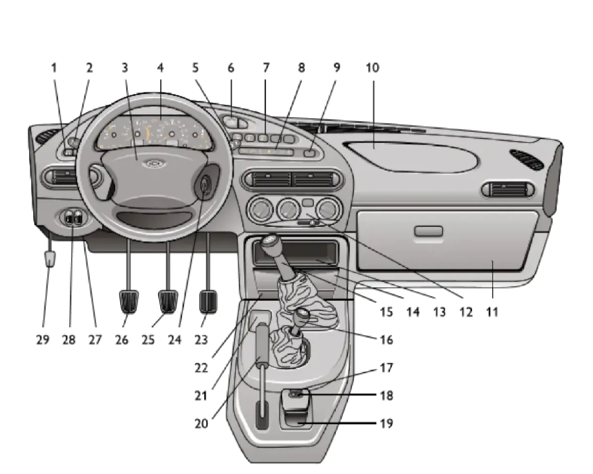

ОПИСАНИЕ АВТОМОБИЛЯ — II. Органы управления и приборы
Панель приборов
панельприборыпедалирычагирадиообогрев сидений
Панель приборов показана на рисунке 16.

- 1. Переключатель наружного освещения.
- 2. Рычаг переключателя указателей поворота и света фар.
- 3. Выключатель звуковых сигналов.
- 4. Комбинация приборов.
- 5. Рычаг переключателя стеклоочистителей и омывателей.
- 6. Выключатель аварийной сигнализации.
- 7. Кнопочные выключатели.
- 8. Блок контрольных ламп.
- 9. Резерв. Устанавливается заглушка.
- 10. Заглушка или подушка безопасности в зависимости от варианта исполнения.
- 11. Вещевой ящик.
- 12. Пульт управления системой вентиляции и отопления салона автомобиля.
- 13. Крышка гнезда радиоаппаратуры.
- 14. Контейнер для мелких предметов.
- 15. Рычаг переключения передач.
- 16. Рычаг управления раздаточной коробкой.
- 17. Блок управления наружными зеркалами, в вариантном исполнении.
- 18. Выключатели обогрева передних сидений, в вариантном исполнении.
- 19. Пепельница для задних пассажиров.
- 20. Рычаг стояночного тормоза.
- 21. Ниша для мелких предметов.
- 22. Крышка пепельницы.
- 23. Педаль акселератора.
- 24. Выключатель зажигания.
- 25. Педаль тормоза.
- 26. Педаль сцепления.
- 27. Крышка монтажного блока.
- 28. Блок регуляторов.
- 29. Рычаг привода замка капота.
Примечание:
В вариантном исполнении выключатели обогрева передних сидений (поз. 18) включают обогрев нажатием на клавишу. Встроенный терморегулятор в автоматическом режиме поддерживает температуру элементов обогрева спинки и подушки сиденья в диапазоне от +25 до +31 °C. Повторным нажатием клавиши или при выключении зажигания обогрев сиденья отключается.
В вариантном исполнении выключатели обогрева передних сидений (поз. 18) включают обогрев нажатием на клавишу. Встроенный терморегулятор в автоматическом режиме поддерживает температуру элементов обогрева спинки и подушки сиденья в диапазоне от +25 до +31 °C. Повторным нажатием клавиши или при выключении зажигания обогрев сиденья отключается.
Примечание:
Предусмотрена установка радиоаппаратуры, соответствующей по габаритам и способу крепления международным стандартам ISO 7736, DIN 75490. Установка радиоаппаратуры должна производиться только у авторизованных дилеров ЗАО «Джи Эм-АВТОВАЗ» с обязательной отметкой в «Сервисной книжке».
Предусмотрена установка радиоаппаратуры, соответствующей по габаритам и способу крепления международным стандартам ISO 7736, DIN 75490. Установка радиоаппаратуры должна производиться только у авторизованных дилеров ЗАО «Джи Эм-АВТОВАЗ» с обязательной отметкой в «Сервисной книжке».
При включении наружного освещения включается подсветка прикуривателя. Для использования прикуривателя нажмите на кнопку патрона до его фиксированного положения. Примерно через 20 секунд патрон автоматически возвращается в исходное положение, готовый к применению.